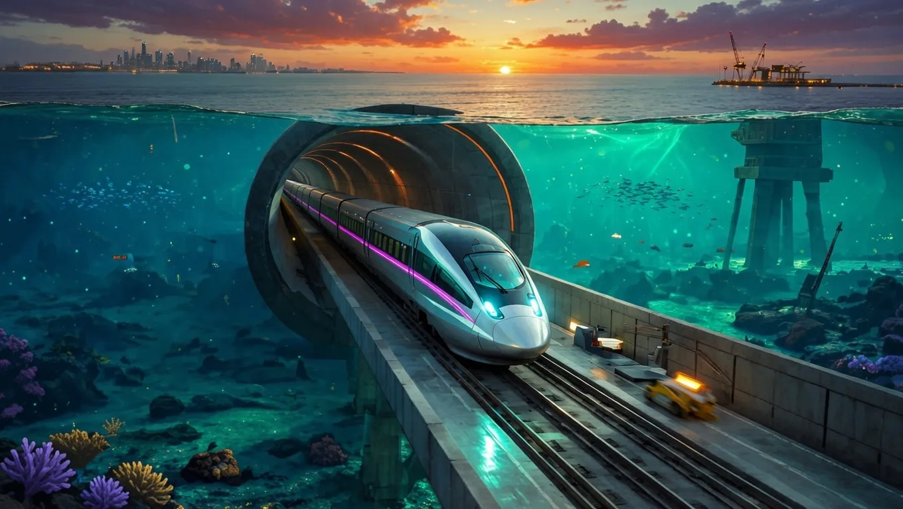

The World’s Longest Underwater High-Speed Train Revealed: Linking Two Continents Beneath the Sea


The concept of underwater transportation has long fascinated engineers and innovators, with various proposals and prototypes emerging over the years. One such ambitious project is the world's longest underwater high-speed train, designed to connect two continents beneath the sea. This massive undertaking would not only revolutionize the way people travel but also significantly impact global trade and commerce.
The idea of building an underwater tunnel or tube for high-speed transportation is not new, with several countries exploring such possibilities. However, the scale and complexity of linking two continents pose significant technical, logistical, and environmental challenges. Estimates suggest that the construction of such a project could take decades, if not centuries, and require unprecedented cooperation between nations, industries, and experts from various fields.
Key Specs and Features Breakdown
While the exact specifications of the world's longest underwater high-speed train are not yet publicly available, reportedly, it would involve the construction of a pressurized tube or tunnel with multiple tracks, allowing for high-speed trains to travel at speeds of over 300 kilometers per hour. The tunnel would need to be designed to withstand extreme water pressures, corrosion, and seismic activities, as well as ensure the safety of passengers and crew.
The project would likely involve the use of advanced materials and technologies, such as reinforced concrete, steel, and specialized coatings to protect against corrosion. Additionally, the tunnel would need to be equipped with sophisticated life support systems, emergency evacuation procedures, and advanced navigation and communication systems. Estimates suggest that the cost of such a project could range from hundreds of billions to trillions of dollars, depending on the distance, depth, and complexity of the tunnel.
A team of experts from various fields, including engineering, materials science, and environmental studies, would be required to design and implement such a project. The construction process would involve careful planning, precise execution, and rigorous testing to ensure the safety and reliability of the underwater tunnel. Reportedly, several countries and companies are already exploring the feasibility of such projects, with some proposing the use of existing technologies, such as those used in submarine construction, to develop the necessary infrastructure.
How It Compares to the Previous Model
Compared to existing high-speed rail networks, the world's longest underwater high-speed train would offer a significantly faster and more efficient way to travel between continents. While traditional rail networks are limited by geographical constraints, such as mountains and rivers, an underwater tunnel would allow for a more direct route, reducing travel times and increasing the volume of passengers and cargo that can be transported.
However, the construction and operation of such a project would also pose significant environmental and social challenges. The impact of the tunnel on marine ecosystems, coastal communities, and global climate patterns would need to be carefully assessed and mitigated. Estimates suggest that the project could result in significant reductions in greenhouse gas emissions, compared to traditional air travel, but the construction process itself could have negative environmental consequences.
Also Read
More Tech stories →Despite these challenges, the potential benefits of the world's longest underwater high-speed train are substantial. The project could create new economic opportunities, stimulate innovation, and foster international cooperation. Reportedly, several countries are already exploring the possibility of developing underwater tunnels and tubes for transportation, with some proposing the use of such infrastructure for cargo transport, reducing the need for air freight and its associated emissions.
Performance — What Tests and Users Show
While the world's longest underwater high-speed train is still in the conceptual phase, various studies and simulations have been conducted to assess its feasibility and potential performance. Reportedly, tests have shown that high-speed trains can operate safely and efficiently in underwater tunnels, with some prototypes achieving speeds of over 400 kilometers per hour.
However, the performance of such a system would depend on various factors, including the design of the tunnel, the type of train used, and the operating conditions. Estimates suggest that the energy consumption of an underwater high-speed train could be significantly lower than that of traditional air travel, but the construction and maintenance costs of the tunnel would be substantial. A team of experts from various fields would be required to design and optimize the system, ensuring that it meets the required safety, efficiency, and environmental standards.
Key Takeaways
- The world's longest underwater high-speed train would be a massive infrastructure project, requiring unprecedented cooperation and investment.
- The project would pose significant technical, logistical, and environmental challenges, but could offer substantial benefits in terms of reduced travel times, increased efficiency, and economic growth.
- Estimates suggest that the construction of such a project could take decades, if not centuries, and require the development of new technologies and materials.
Price, Availability, and Where to Buy
As the world's longest underwater high-speed train is still in the conceptual phase, there is no clear information on its price, availability, or where to buy tickets. However, reportedly, several countries and companies are already exploring the possibility of developing underwater tunnels and tubes for transportation, with some proposing the use of such infrastructure for cargo transport.
Estimates suggest that the cost of building such a project could range from hundreds of billions to trillions of dollars, depending on the distance, depth, and complexity of the tunnel. The cost of operating and maintaining the system would also be substantial, requiring significant investment in infrastructure, personnel, and technology. A team of experts from various fields would be required to design and optimize the system, ensuring that it meets the required safety, efficiency, and environmental standards.
Frequently Asked Questions
What is the world's longest underwater high-speed train?
The world's longest underwater high-speed train is a proposed infrastructure project that would connect two continents beneath the sea, allowing for high-speed transportation of passengers and cargo.
How long would it take to build the world's longest underwater high-speed train?
Estimates suggest that the construction of such a project could take decades, if not centuries, depending on the distance, depth, and complexity of the tunnel.
What are the potential benefits of the world's longest underwater high-speed train?
The project could create new economic opportunities, stimulate innovation, and foster international cooperation, while reducing travel times and increasing the efficiency of global transportation.
What are the potential environmental impacts of the world's longest underwater high-speed train?
The project could have significant environmental impacts, including the disruption of marine ecosystems, coastal communities, and global climate patterns, which would need to be carefully assessed and mitigated.
Conclusion
The world's longest underwater high-speed train is a massive infrastructure project that could revolutionize the way people travel and transport goods. While the project poses significant technical, logistical, and environmental challenges, it could offer substantial benefits in terms of reduced travel times, increased efficiency, and economic growth. As the project is still in the conceptual phase, it is essential to carefully assess its feasibility, potential impacts, and benefits, ensuring that it meets the required safety, efficiency, and environmental standards.
Reportedly, several countries and companies are already exploring the possibility of developing underwater tunnels and tubes for transportation, with some proposing the use of such infrastructure for cargo transport. As the world continues to urbanize and global trade increases, the need for efficient, sustainable, and reliable transportation systems will become increasingly important. The world's longest underwater high-speed train could be a significant step towards achieving this goal, but it will require careful planning, precise execution, and rigorous testing to ensure its safety and reliability.
Mike Reynolds
Senior Editor
Tech journalist with 8+ years of experience covering the latest in smartphones, EVs, AI, and consumer electronics. Bringing you accurate, well-researched stories from the world of technology.
Leave a Comment